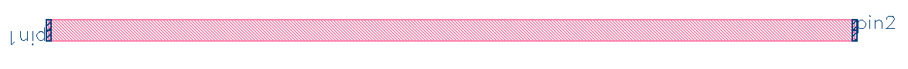

EBeam
ebeam_bdc_te1550

The bidirectional coupler has 4 ports, labeled as pictured. Its efficiently
splits light that is input from one port into the two outputs on the opposite
side (with a corresponding pi/2 phase shift). Additionally, it efficiently
interferes lights from two adjacent inputs, efficiently splitting the
interfered signal between the two ports on the opposing side.
ebeam_gc_te1550

The grating coupler efficiently couples light from a fiber array positioned
above the chip into the circuit. For the TE mode, the angle is -25 degrees
[needs citation].
ebeam_terminator_te1550
The terminator dissipates excess light into free space. If you have a path
where the light doesn’t need to be measured but you don’t want it reflecting
back into the circuit, you can use a terminator to release it from the circuit.
ebeam_wg_integral_1550

A waveguide easily connects other components within the circuit.
ebeam_y_1550

The y-branch efficiently splits the input between the two outputs.
SiP-ANN
sipann_wg_integral
A waveguide easily connects other components within the circuit.
The SiP-ANN waveguide is different from the EBeam package since its
values are calculated based on a regression fit to simulation data.
sipann_dc_straight
Regression Based Closed Form solution of a straight directional coupler
sipann_dc_halfracetrack
Regression Based Closed Form solution of half a racetrack resonator
sipann_dc_halfring
Regression Based Closed Form solution of half of a ring resonator
sipann_dc_standard
Regression Based Closed Form solution of a standard shaped directional coupler
sipann_dc_doublehalfring
Regression Based Closed Form solution of double half ring resonator
sipann_dc_angledhalfring
Regression Based Closed Form solution of an angled ring resonator
sipann_dc_arbitrarysym
Regression Based form of any directional coupler provided gap function
sipann_dc_arbitraryantisym
Regression Based form of any directional coupler provided gap function
sipann_dc_crossover1550

Regression based form of a 100/0 directional coupler.